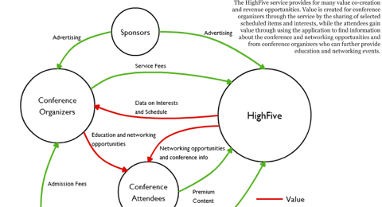
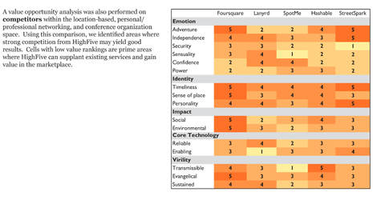

Our revenue model identified key players in making the idea viable.

A value opportunity analysis of competitors identified areas of opportunity.
As part of a course jointly taught by John Zimmerman and Jim Morris, our interdiscplinary team of five spent four months researching an idea for a mobile application. The course was an excellent exercise in taking an idea from infancy, iterating on it based on research, and pitching to an audience. In the process, we discovered a real unmet need in the mobile world, defined the technical feasibility, and determined the financial viability of our idea.
Our idea, called HiFive, is a mobile application that helps people find the most interesting people and sessions at their conference. People at large, crowded events often unknowingly miss the opportunity to interact with others who share similar interests. While networking in the online space is a simple matter of finding keywords relevant to one's interests, the physical space currently offers little to automate this process. We see an opportunity in the online mobile space to facilitate the process of finding and meeting people at large events. From our research, we discovered that conferences would serve as an ideal type of event for a mobile solution.